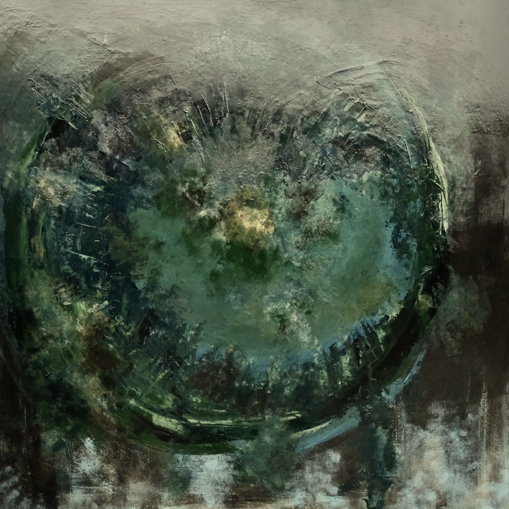

Overthinking
Alice Thinking Series
Acrylic on Canvas
900 × 900 mm
Sometimes a thought is just a thought. Sometimes it opens a door. Overthinking is the journey into a rabbit hole, around another corner and into somewhere that makes perfect sense until it doesn't.